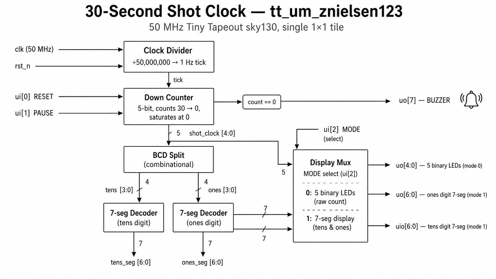
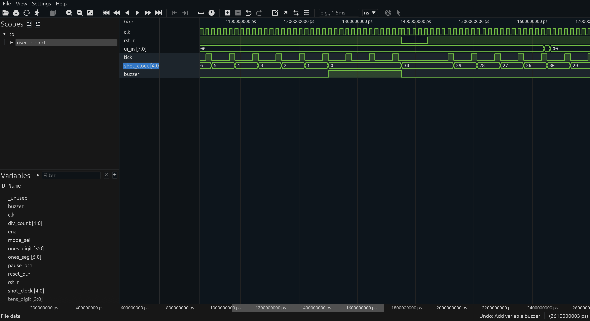
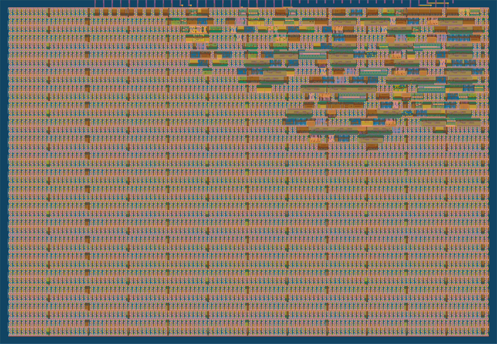

30-Second Basketball Shot Clock
Tiny Tapeout · sky130 · 50 MHz
Zach Nielsen
ECE429 — Final Project — May 13, 2026
Hi, I'm Zach. For my final project I built a 30-second basketball shot clock as a single-tile Tiny Tapeout design. It counts down once per second from 30 to 0, has reset and pause buttons, lights a buzzer at zero, and can drive either five binary LEDs or two 7-segment digits. I'll walk you through the design, the verification, and the layout in about five minutes.
What is Tiny Tapeout?
Educational program — get your digital design actually fabricated for ~$50
Many small student designs share one die in the SkyWater 130 nm process
Each project gets a 1 × 1 tile ≈ 167 µm × 108 µm
Open-source EDA flow: Verilog → Yosys → LibreLane → GDSII
Standard pinout: 8 inputs, 8 outputs, 8 bidirectionals, plus clk, rst_n, ena
Quick context. Tiny Tapeout pools many small student designs onto one die and ships them to SkyWater for manufacturing. You design in Verilog, an open-source toolchain — Yosys for synthesis, LibreLane for place-and-route — turns it into a physical layout. Each student gets a fixed-size tile and a fixed pinout: eight inputs, eight outputs, eight bidirectionals, plus clock and reset.
The design
A 30-second basketball shot clock on one chip:
30 → 29 → 28 → … → 1 → 0 🔔
Counts down once per second , derived from the 50 MHz Tiny Tapeout clock
ui[0] reloads to 30; ui[1] pauses; ui[2] picks display modeuo[7] lights the buzzer when the count reaches 0Total core: ~35 flip-flops + a 7-segment lookup + a small output mux
The design is a 30-second basketball shot clock. It counts down once per second from 30 to 0. There are three control inputs: ui[0] is a reset button that reloads to 30, ui[1] pauses the count while held high, and ui[2] is a mode switch I'll come back to. uo[7] is the buzzer output — it lights when the count hits zero. The whole core is about thirty-five flops: a 26-bit clock divider, a 5-bit countdown register, plus some combinational logic.
Why a shot clock?
Small project, but it exercises the full digital design vocabulary:
Clock division — 50 MHz down to 1 Hz with a counter (~26 flops)Sequential state with control — reset, pause, saturating decrementCombinational decode — binary count → BCD → 7-segment patternsMultiplexed I/O — fitting 20 desired output signals into 16 chip pinsAnd it's visible — the demo is two 7-seg digits counting down to a buzzer
Why a shot clock? Two reasons. First, it's a small enough design to actually finish in a few hours and ship to silicon, but it still exercises the full digital-design vocabulary. I needed clock division to derive 1 hertz from the 50 megahertz Tiny Tapeout clock. I needed sequential state with multiple control inputs — reset, pause, and a saturating decrement. I needed combinational decoding from binary to BCD to seven-segment. And I needed to multiplex outputs because I wanted to support two different display options on a chip that only has sixteen output pins. Second, it's visible — you wire up a couple of 7-segment displays and the audience literally watches it count down.
Architecture

Clock divider → down counter → BCD split → 7-seg decode → output mux
Here's the architecture. Left side: the 50 MHz clock feeds a 26-bit divider that emits a one-cycle tick once per second. The tick drives the 5-bit countdown register, which also takes the reset and pause inputs. The counter saturates at zero — once it hits zero it stays there until reset. The current count feeds a BCD-split block that produces a tens digit and a ones digit, each of which goes through a 7-segment decoder. Finally, the output mux on the right picks between routing the raw 5-bit count to LEDs or routing the two 7-segment patterns to the segment pins, controlled by the mode input. The buzzer output is just a simple equality check: count equals zero.
The Verilog (the entire countdown)
// 1 Hz tick — single-cycle pulse from the 50 MHz clock
always @(posedge clk) begin
if (!rst_n) div_count <= 0;
else if (div_count == TICK_DIV - 1) begin
div_count <= 0;
tick <= 1'b1;
end else begin
div_count <= div_count + 1'b1;
tick <= 1'b0;
end
end
// Shot clock — synchronous reset, saturates at 0
always @(posedge clk) begin
if (!rst_n || reset_btn)
shot_clock <= 5'd30;
else if (tick && !pause_btn && shot_clock != 0)
shot_clock <= shot_clock - 1'b1;
end
Synchronous reset → maps cleanly to sky130 D-flop + 2:1 mux cells
This is the heart of the design — two always blocks. The first is the clock divider: a 26-bit counter that resets to zero whenever it reaches TICK_DIV minus one, emitting a one-cycle tick pulse each time. In silicon, TICK_DIV is fifty million, so tick fires once per second. The second always block is the shot clock itself. On reset — either chip reset or the user pressing the reset button — it loads thirty. Otherwise, when tick is high and pause isn't asserted and the count isn't already zero, it decrements by one. The crucial design choice here is synchronous reset rather than async. sky130 standard-cell flops can't async-reset to an arbitrary value — only to a constant zero or one. Synchronous reset becomes a simple 2-to-1 mux on the D input of each flop, which the synthesis tools map without any trouble.
Pin assignments
Pin Direction Role
ui[0]input RESET — reload count to 30 ui[1]input PAUSE — freeze count while held high ui[2]input MODE — 0 = binary LEDs, 1 = 7-seg uo[7]output BUZZER — high when count = 0 uo[4:0]output (mode 0) 5-bit binary count → 5 LEDs uo[6:0]output (mode 1) Ones-digit 7-segment (a..g) uio[6:0]output (mode 1) Tens-digit 7-segment (a..g) clk / rst_n / ena— Standard TT housekeeping
The pinout. Three control inputs on ui zero, one, and two. The buzzer on uo[7] is always present regardless of display mode. In mode zero, the five low bits of uo are the binary value — wire them to five LEDs and they show the count in binary. In mode one, the seven low bits of uo encode the ones-digit segments, and seven of the eight bidirectional pins encode the tens-digit segments. So one switch flip changes which external hardware works — same chip, two demos.
Verification — four cocotb tests
Full countdown — verify shot_clock goes 30 → 29 → … → 0 over 30 ticks, then saturates at 0 and asserts the buzzer.Reset button — partway through countdown, press ui[0]; verify count snaps back to 30.Pause — hold ui[1], verify count freezes for 10 ticks, then resumes on release.7-segment decode — verify mode-1 outputs match the encoded digits.
✓ TESTS=4 PASS=4 FAIL=0
TICK_DIV is parameterized — RTL sim uses 4, the silicon uses 50,000,000.
Four cocotb tests, all passing on every CI run. The first runs the full thirty-tick countdown — at every tick, it checks the output matches the expected value, and at the end it verifies the buzzer comes on and the count saturates at zero. The second test interrupts the countdown by pressing reset and verifies the count snaps back to thirty. The third asserts pause and verifies the count doesn't budge for many cycles, then releases pause and verifies counting resumes. The fourth tests the 7-segment decode path. One detail worth mentioning: the clock divider TICK_DIV is a Verilog parameter — in real silicon it's fifty million for a 1 Hz tick, but the testbench overrides it to four so the simulation finishes in milliseconds rather than minutes.
Simulation waveform

shot_clock: 30 → 29 → 28 → 27 → 26 → … (one decrement per tick)
Here's the waveform from one of the cocotb tests, viewed in Surfer. You can see reset go high, the divider start counting, and then each time the tick pulse fires, the shot_clock register decrements by one. Thirty, twenty-nine, twenty-eight, and so on. The cadence in this simulation is artificially fast because of the parameter override I mentioned, but the silicon will produce exactly the same waveform stretched out by twelve and a half million.
From RTL to silicon

Yosys synthesis → floorplan → placement → CTS → routing → DRC / LVS / STA → GDSII
And here's the final layout — the actual mask data that would go to the foundry. The dense cluster of standard cells is my real logic — the divider counter, the shot clock register, the BCD decode, the 7-seg lookup, and the output mux. The rest of the tile is filler and decoupling cells the flow inserts automatically. They have no logical function; they're there because the manufacturing process needs minimum-density rules satisfied across the whole tile, otherwise the chemical-mechanical polish step would dish out empty regions. The pipeline that produces this: Yosys does synthesis from Verilog to a netlist of standard cells. LibreLane handles floorplanning, placement, clock-tree synthesis, routing, all the design-rule and timing checks, and finally GDSII export. The whole flow runs in GitHub Actions in about three minutes.
What I learned
Async vs sync reset matters at synthesis time. sky130 flops can't async-reset to a non-constant value — sync reset became a 2:1 mux on each flop's D input and mapped on the first try.Cocotb 2.0 sampling is subtle. Reads right after RisingEdge can return the pre-edge value; sampling on FallingEdge guarantees the NBAs have settled.Synthesized parameters are baked in. The RTL test overrode TICK_DIV=4, but the gate-level netlist hard-codes 50 M — so the GL test had to skip the slow countdown and run a smoke test.Pin sharing trumps pin count. 20 desired output signals into 16 pins — a mode bit and a small output mux solved it without growing the chip.
A few things I learned the hard way. First — async-reset-to-non-constant is a synthesis trap on sky130. Knowing this up front, I used synchronous reset everywhere; it just becomes a 2-to-1 mux on each flop's D input and maps cleanly. Second — cocotb 2.0 returns from RisingEdge at the active edge, before the non-blocking assignments have actually settled. So my first attempt at sampling the output was reading the value from one cycle ago. Sampling on FallingEdge fixed it. Third — and this one bit me: my testbench overrode the divider parameter so simulation would run fast, but when the gate-level test ran on the synthesized netlist, the parameter had been replaced by the real fifty-million constant. The slow countdown tests timed out. I had to detect the gate-level environment in cocotb and substitute a fast smoke test. And fourth — design constraints force engineering choices. I wanted both display options, which needed twenty output pins, and I only had sixteen. A mode select bit and a small output mux made both options share the same pins without growing the chip.
Thank you
Repo github.com/znielsen123/ece-429-tt-final
Datasheet znielsen123.github.io/ece-429-tt-final
Questions?
Thanks for listening. The full project — Verilog, tests, datasheet, layout files, slide deck — is on GitHub at the repo link. Happy to take questions.